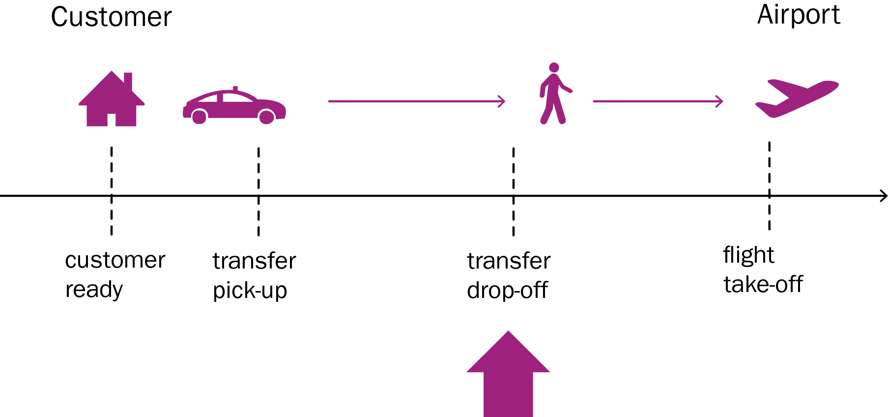
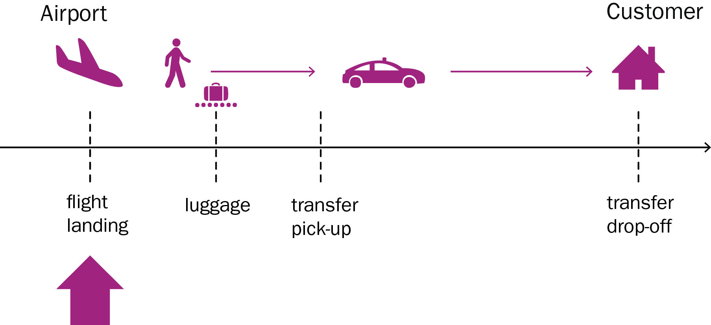

To request an access token, contact api@tinker.travel
api.tinker.taxiThis API allow booking of taxi rides to and from airports in Europe.
You give us the flight number, flight date and home address and we give you various options. We call this a quote. You pick the option you like, create a customer with contact details and confirm the quote.
When you book a takeoff, it is important to give the taxi drop-off time.

When you book a landing, it is important to specify the landing time of the flight.

If you fill in your `apiId` and `apiKey` you can try the API calls here.